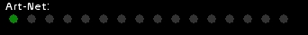

On peut affecter au dock d'un fader des contenus dynamiques,
Cette fonction permet d'affecter les circuits reçus par la carte Dmx-In paramétrée dans Configuration DMX
L'affectation est désomais possible depuis la page Configuration Network
Sous [Art-Net>Dock] sont affichées 16 petites pastilles.
Lorsqu'un signal Art-Net est reçu, la pastille de l'univers reçu s'affiche en bleu.
La couleur verte s'affiche pour l'émission Art-Net.
